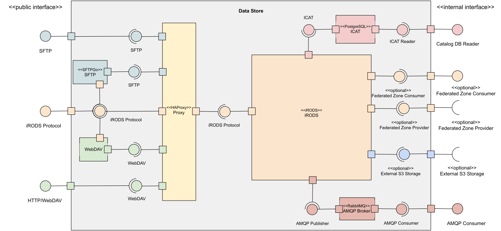

Data Storage
Data Storage in CyVerse is managed both internally and through federation.
What is Federation?
Data federation allows institutions to manage their own hardware, or buy space on commercial cloud, and integrate it with our Data Store.
Data that are federated do not appear any differently than data that are hosted in the primary CyVerse Data Store.
This is not federation in the iRODS sense, where the the federated storage is managed in a separate zone. The storage managed by the institution is in the same zone, iplant, as the CyVerse managed storage.

Figure: Access to the Data Store can be accomplished over HTTPS (https://), SFTP (sftp://) or iRODS Protocol
iRODS¶
CyVerse uses iRODS (integrated Rule Oriented Data System) to manage its users data and uses PostgreSQL to manage the catalog (ICAT) database for iRODS.
SFTP¶
CyVerse uses SFTPGo along with a custom iRODS storage backend to provide SFTP access to data in the Data Store.
WebDAV¶
CyVerse uses apache along with the davrods module to manage the WebDAV service for accessing the Data Store over the HTTPS and WebDAVS protocols. Varnish HTTP Cache is used internally for caching requested files.
HAProxy¶
CyVerse uses HAProxy to provide a common point of entry, data.cyverse.org, for clients to access all of the Data Store services.
AMQP¶
CyVerse uses RabbitMQ to provide an AMQP-based message bus for notifying other CyVerse services like DataWatch about data related events.